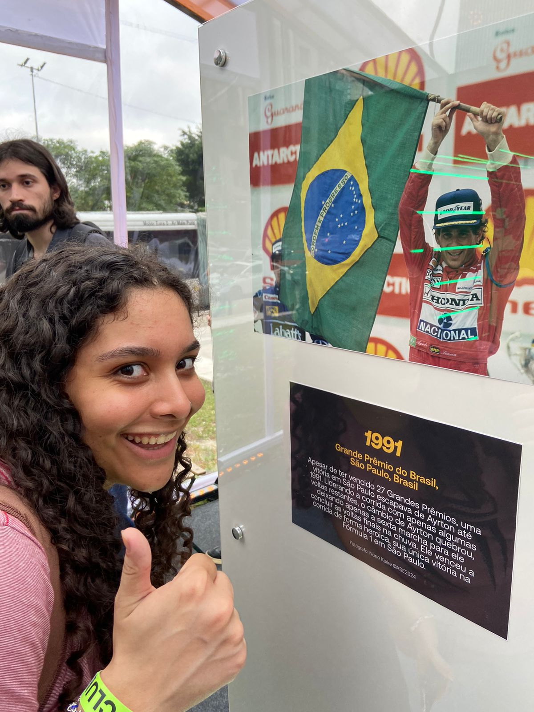
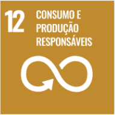
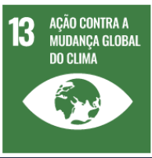
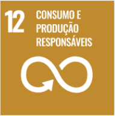
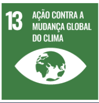

OneFormula
Quem sou eu?
Meu nome é Lara, tenho 19 anos e acompanho F1 desde os meus 12 anos de idade. Em 2017, acordei cedo num domingo e decidi assistir TV e estava passando corrida, a partir daí assisti algumas corridas e os anos foram se passando e comecei a acompanhar todas as corridas, qualificações e treinos.
2021

Por que escolhi F1?
A Fórmula 1 estabeleceu a meta de alcançar Net Zero Carbon até 2030, o que significa neutralizar suas emissões de carbono. Para isso, a categoria está implementando diversas iniciativas focadas na redução de impactos ambientais.
 


